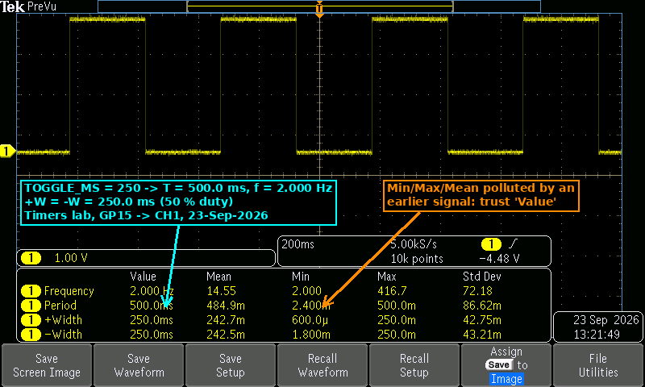
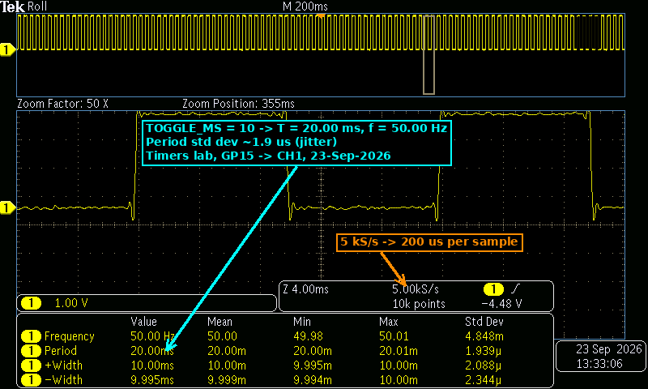
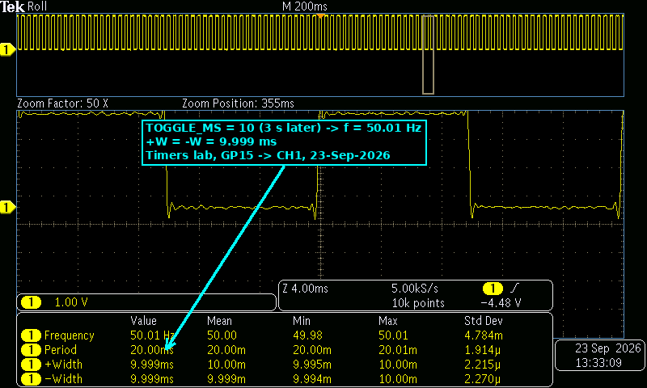

Timers — Repeating Timer on GP15 (Predict vs Measure)
Objective
Generate a square wave on GP15 with a repeating timer (no sleep_ms()), predict its period, frequency and duty cycle, and check them on the oscilloscope with TOGGLE_MS = 250 and TOGGLE_MS = 10.
Materials
- Raspberry Pi Pico 2 W
- Tektronix oscilloscope with one probe
- Micro-USB cable
Circuit Diagram
Configuration: clk_sys at 150 MHz (default), timer tick of 1 µs. Scope at 5 kS/s, 10k points, trigger on the CH1 rising edge.
Source Code
#define OUT_PIN 15
#define TOGGLE_MS 250 // only line changed between runs (250 → 10)
static bool toggle_cb(repeating_timer_t *t) {
level = !level;
gpio_put(OUT_PIN, level); // short callback, no sleeps
return true; // keep repeating
}
int main(void) {
...
repeating_timer_t timer;
// negative delay: start-to-start scheduling → jitter but no drift
add_repeating_timer_ms(-TOGGLE_MS, toggle_cb, NULL, &timer);
while (true) tight_loop_contents(); // main() is free
}
How it works
add_repeating_timer_ms()makes the hardware timer calltoggle_cbeveryTOGGLE_MSthrough an interrupt.- The callback only toggles GP15 and returns
trueto keep repeating. main()doesn't wait on anything, so the CPU is free for other work.
Prediction
Each callback changes the pin once, so one period = one HIGH + one LOW:
| TOGGLE_MS | HIGH = LOW | T | f |
|---|---|---|---|
| 250 ms | 250 ms | 500 ms | 2.000 Hz |
| 10 ms | 10 ms | 20 ms | 50.00 Hz |
Why the delay is negative
- Positive: the next call is counted from when the callback ends, so the latency adds up every cycle → drift.
- Negative: the next call is counted from when the previous one should have started → the latency doesn't add up, it only shows as jitter (a few µs).
Procedure
TOGGLE_MS = 250, measured at 200 ms/div → E1.- Changed only
TOGGLE_MSto 10, zoomed 50× (4 ms/div) → E2. - Another capture 3 s later to check repeatability → E3.
Results
| # | TOGGLE_MS | f | T | +W | −W | σ(T) |
|---|---|---|---|---|---|---|
| E1 | 250 | 2.000 Hz | 500.0 ms | 250.0 ms | 250.0 ms | — |
| E2 | 10 | 50.00 Hz | 20.00 ms | 10.00 ms | 9.995 ms | 1.939 µs |
| E3 | 10 | 50.01 Hz | 20.00 ms | 9.999 ms | 9.999 ms | 1.914 µs |

E1 — TOGGLE_MS = 250 ms: 2 Hz, 50 % duty

E2 — TOGGLE_MS = 10 ms: 50 Hz, 50× zoom

E3 — TOGGLE_MS = 10 ms, 3 s later
Predicted vs measured
| Quantity | Predicted | Measured | Error |
|---|---|---|---|
| T (250) | 500 ms | 500.0 ms | 0.00 % |
| f (250) | 2.000 Hz | 2.000 Hz | 0.00 % |
| HIGH / LOW (250) | 250 / 250 ms | 250.0 / 250.0 ms | 0.00 % |
| T (10) | 20 ms | 20.00 ms | 0.00 % |
| f (10) | 50.00 Hz | 50.00 / 50.01 Hz | 0.00 / +0.02 % |
| LOW (10) | 10 ms | 9.995 / 9.999 ms | −0.05 / −0.01 % |
The prediction held for both values: a clean 50 % square wave, and only TOGGLE_MS needs to change to change the frequency.
What went wrong
Readings that looked "too perfect." I expected something like 500.12 ms because of the interrupt latency, but I got exactly 500.0 ms. The reasons:
- The readout has 4 digits: at 500.0 ms the smallest step is 100 µs, and at 20.00 ms it's 10 µs.
- At 5 kS/s there are 200 µs between samples, so a few µs can't be seen.
- The real error is tiny thanks to the negative delay. It only shows up in σ(T) ≈ 1.9 µs.
Next time: zoom in on a single edge (1–10 µs/div, ≥ 1 MS/s) and read Std Dev or Min/Max.
Bad statistics in E1. Mean, Min and Max showed impossible values for 2 Hz (e.g. a 2.4 ms minimum period). They came from samples taken before the signal was stable, and I never reset the statistics. For E1 I only used the Value column.
Next time: press Reset Statistics once the signal is stable.
What I learned
- A repeating timer generates a precise signal without blocking the CPU.
T = 2 · TOGGLE_MSmatched the scope with ≤ 0.05 % error.- The negative delay is key: the latency turns into jitter (σ ≈ 1.9 µs), not drift.
- A "perfect" reading doesn't mean there's no error. It can mean the error is below what the scope can resolve with that setup.